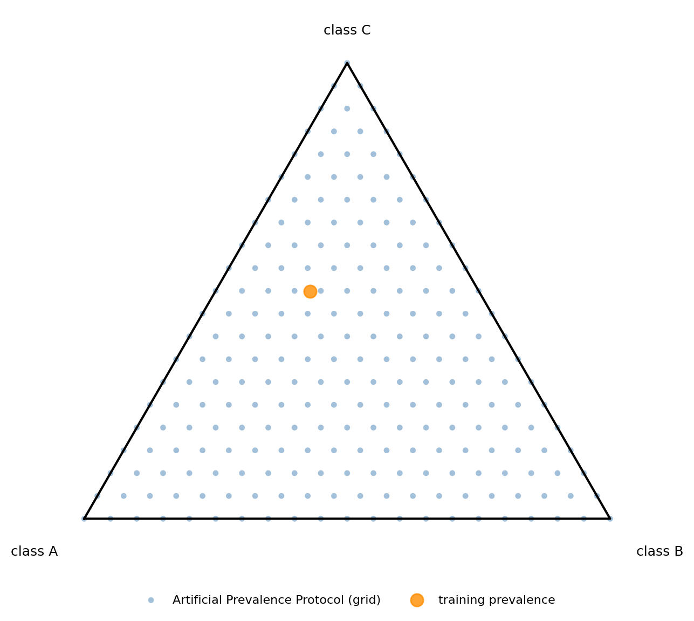
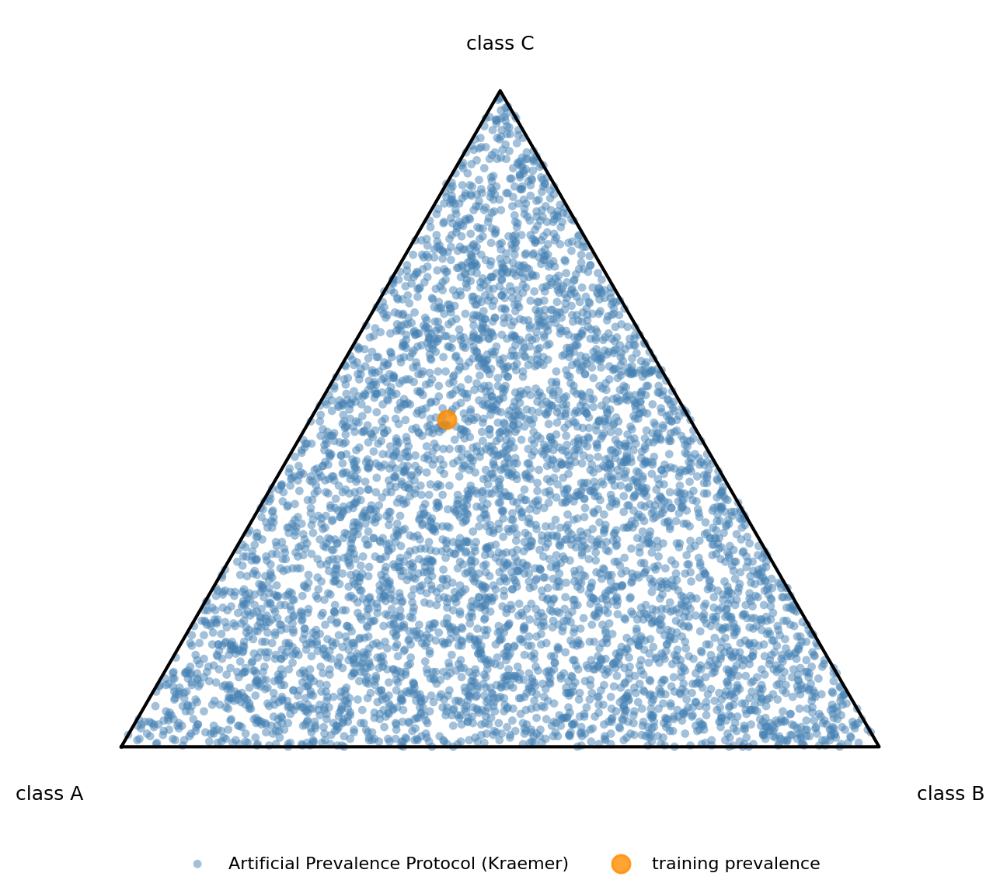
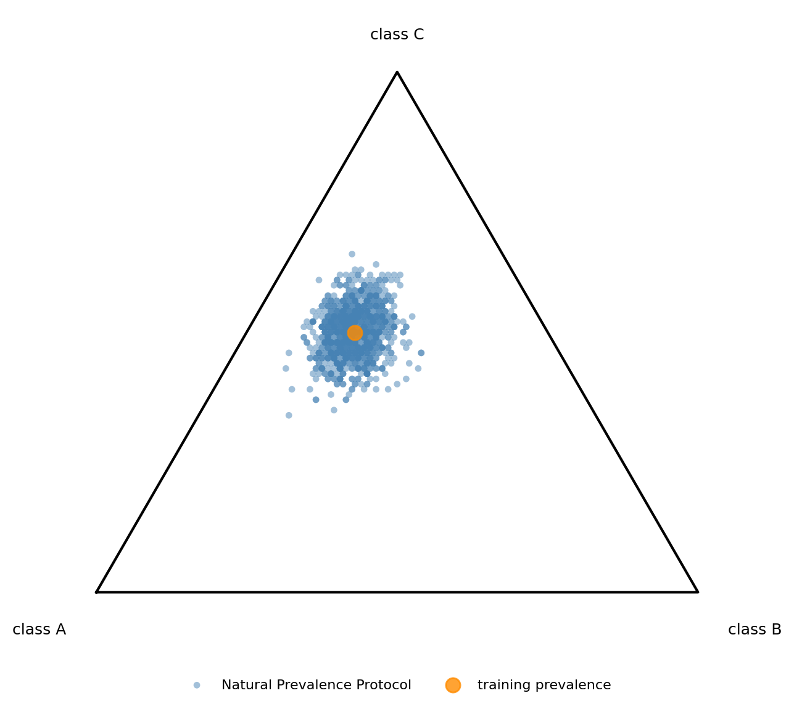
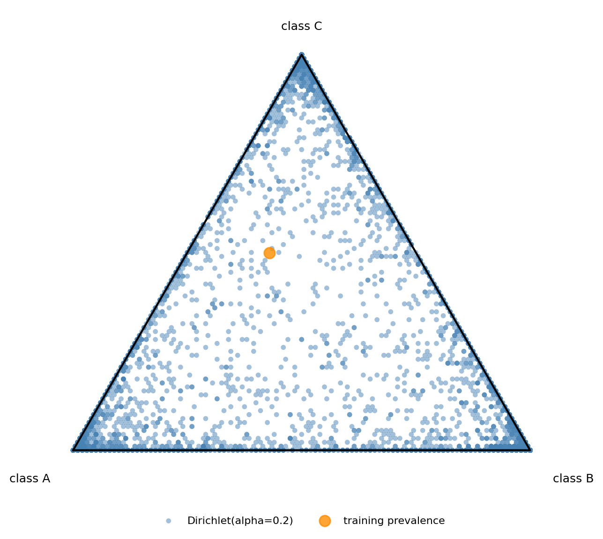

6. Protocols#
Quantification methods are expected to behave robustly in the presence of shift. For this reason, quantification methods need to be confronted with samples exhibiting widely varying amounts of shift. Protocols implement specific ways for generating such samples.
In QuaPy, a protocol is an instance of AbstractProtocol implementing a call method that returns a generator yielding a tuple (sample, prev) every time. The protocol can also implement the function total() informing of the number of total samples that the protocol generates.
Protocols can inherit from AbstractStochasticSeededProtocol, the class of protocols that generate samples stochastically, but that can be set with a seed in order to allow for replicating the exact same samples. This is important for evaluation purposes, since we typically require all our methods be evaluated on the exact same test samples in order to allow for a fair comparison. Indeed, the seed is set by default to 0, since this is the most commonly desired behaviour. Indicate radom_state=None for allowing different sequences of samples to be generated every time the protocol is invoked.
Protocols that also inherit from OnLabelledCollectionProtocol are such that samples are generated from a LabelledCollection object (e.g., a test collection, or a validation collection). These protocols also allow for generating sequences of LabelledCollection instead of (sample, prev) by indicating return_type=’labelled_collection’ instead of the default value return_type=’sample_prev’.
For a more technical explanation on AbstractStochasticSeededProtocol and OnLabelledCollectionProtocol, see the “custom_protocol.py” provided in the example folder.
QuaPy provides implementations of most popular sample generation protocols used in literature. This is the subject of the following sections.
6.1. APP: Artificial-Prevalence Protocol#
The “artificial-sampling protocol” (APP) proposed by Forman (2005) is likely the most popular protocol used for quantification evaluation. In APP, a test set is used to generate samples at desired prevalence values covering the full spectrum.
In APP, the user specifies the number of (equally distant) points to be generated from the interval [0,1]; in QuaPy this is achieved by setting n_prevalences. For example, if n_prevalences=11 then, for each class, the prevalence values [0., 0.1, 0.2, …, 1.] will be used. This means that, for two classes, the number of different prevalence values will be 11 (since, once the prevalence of one class is determined, the other one is constrained). For 3 classes, the number of valid combinations can be obtained as 11 + 10 + … + 1 = 66. In general, the number of valid combinations that will be produced for a given value of n_prevalences can be consulted by invoking num_prevalence_combinations, e.g.:
import quapy.functional as F
n_prevalences = 21
n_classes = 4
n = F.num_prevalence_combinations(n_prevalences, n_classes, n_repeats=1)
in this example, n=1771. Note the last argument, n_repeats, that informs of the number of examples that will be generated for any valid combination (typical values are, e.g., 1 for a single sample, or 10 or higher for computing standard deviations of performing statistical significance tests).
One can instead work the other way around, i.e., one could decide for a maximum budged of evaluations and get the number of prevalence points that will give rise to a number of evaluations close, but not higher, than this budget. This can be achieved with the function get_nprevpoints_approximation, e.g.:
budget = 5000
n_prevalences = F.get_nprevpoints_approximation(budget, n_classes, n_repeats=1)
n = F.num_prevalence_combinations(n_prevalences, n_classes, n_repeats=1)
print(f'by setting n_prevalences={n_prevalences} the number of evaluations for {n_classes} classes will be {n}')
this will produce the following output:
by setting n_prevalences=30 the number of evaluations for 4 classes will be 4960
The following code shows an example of usage of APP for model selection and evaluation:
import quapy as qp
from quapy.method.aggregative import ACC
from quapy.protocol import APP
import numpy as np
from sklearn.linear_model import LogisticRegression
qp.environ['SAMPLE_SIZE'] = 100
qp.environ['N_JOBS'] = -1
# define an instance of our custom quantifier
quantifier = ACC(LogisticRegression())
# load the IMDb dataset
train, test = qp.datasets.fetch_reviews('imdb', tfidf=True, min_df=5).train_test
# model selection
train, val = train.split_stratified(train_prop=0.75)
Xtr, ytr = train.Xy
quantifier = qp.model_selection.GridSearchQ(
quantifier,
param_grid={'classifier__C': np.logspace(-2, 2, 5)},
protocol=APP(val) # <- this is the protocol we use for generating validation samples
).fit(Xtr, ytr)
# default values are n_prevalences=21, repeats=10, random_state=0; this is equialent to:
# val_app = APP(val, n_prevalences=21, repeats=10, random_state=0)
# quantifier = GridSearchQ(quantifier, param_grid, protocol=val_app).fit(Xtr, ytr)
# evaluation with APP
mae = qp.evaluation.evaluate(quantifier, protocol=APP(test), error_metric='mae')
print(f'MAE = {mae:.4f}')
Note that APP is an instance of AbstractStochasticSeededProtocol and that the random_state is by default set to 0, meaning that all the generated validation samples will be consistent for all the combinations of hyperparameters being tested. Note also that the sample_size is not indicated when instantiating the protocol; in such cases QuaPy takes the value of qp.environ[‘SAMPLE_SIZE’].
This protocol is useful for testing a quantifier under conditions of prior probability shift.
The following ternary plot, generated by example 21,
shows the prevalence values covered by a grid-based APP in a three-class problem (academic-success):

Each point corresponds to one sampled prevalence vector. As expected, the points lie on a regular grid over the simplex, ensuring systematic coverage of the prevalence space.
6.2. UPP: Sampling from the unit-simplex, the Uniform-Prevalence Protocol#
Generating all possible combinations from a grid of prevalence values (APP) in multiclass is cumbersome, and when the number of classes increases it rapidly becomes impractical. In some cases, it is preferable to generate a fixed number of samples displaying prevalence values that are uniformly drawn from the unit-simplex, that is, so that every legitimate distribution is equally likely. The main drawback of this approach is that we are not guaranteed that all classes have been tested in the entire range of prevalence values. The main advantage is that every possible prevalence value is electable (this was not possible with standard APP, since values not included in the grid are never tested). Yet another advantage is that we can control the computational burden every evaluation incurs, by deciding in advance the number of samples to generate.
The UPP protocol implements this idea by relying on the Kraemer algorithm for sampling from the unit-simplex as many vectors of prevalence values as indicated in the repeats parameter. UPP can be instantiated as:
protocol = qp.protocol.UPP(test, repeats=100)
This is the most convenient protocol for datasets containing many classes; see, e.g., LeQua (2022), and is useful for testing a quantifier under conditions of prior probability shift.
The next plot shows one such protocol, labelled in example 21 as APP(Kraemer), to emphasize that it plays the role of an artificial-prevalence protocol without relying on a fixed grid:

Unlike grid-based APP, UPP does not force prevalence vectors to lie on a regular lattice. Instead, it spreads samples over the simplex in a statistically uniform way, making it attractive when the number of classes is large and exhaustive grids become impractical.
Note that UPP is actually a different (modern) implementation of the Artificial Prevalence Protocol, and is here given a different name simply to allow both implementations coexist in QuaPy. “UPP” is not a proper accademic name, and practitioners should rather refer to it as APP.
6.3. NPP: Natural-Prevalence Protocol#
The “natural-prevalence protocol” (NPP) comes down to generating samples drawn uniformly at random from the original labelled collection. This protocol has sometimes been used in literature, although it is now considered to be deprecated, due to its limited capability to generate interesting amounts of shift. All other things being equal, this protocol can be used just like APP or UPP, and is instantiated via:
protocol = qp.protocol.NPP(test, repeats=100)
The prevalence coverage of NPP is much more concentrated, since the samples are obtained by plain random subsampling from the test set and therefore remain close to its natural prevalence:

This makes NPP useful when one wants to evaluate quantifiers under mild or realistic drift conditions, but much less suitable than APP or UPP for stress testing performance across the full simplex.
6.4. Dirichlet Protocol#
QuaPy also implements a :class:DirichletProtocol, which samples prevalence
vectors from a Dirichlet distribution before drawing the corresponding sample
from the labelled collection:
protocol = qp.protocol.DirichletProtocol(test, alpha=0.2, repeats=100)
The parameter alpha controls how concentrated the protocol is. Small values
of alpha favour sparse prevalence vectors near the corners of the simplex,
while larger values generate more balanced mixtures. When all entries of
alpha are equal to 1, the protocol becomes uniformly distributed over the
simplex, similarly in spirit to UPP.
The following plot shows the effect of a sparse prior with alpha=0.2:

Compared to UPP, the mass is clearly pulled towards the vertices and edges, thus producing more extreme label-shift scenarios.
The parameter alpha in the Dirichlet distribution is typically defined as an
array of shape (n_classes). When the user specifies a single value, QuaPy
broadcasts this value for all classes. Conversely, a different value can be
specified for each class.
6.5. Other protocols#
Other protocols exist in QuaPy and will be added to the qp.protocol.py module.